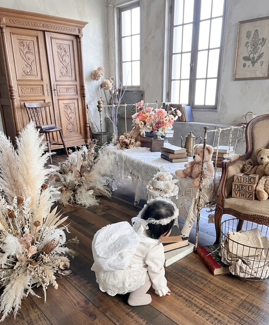
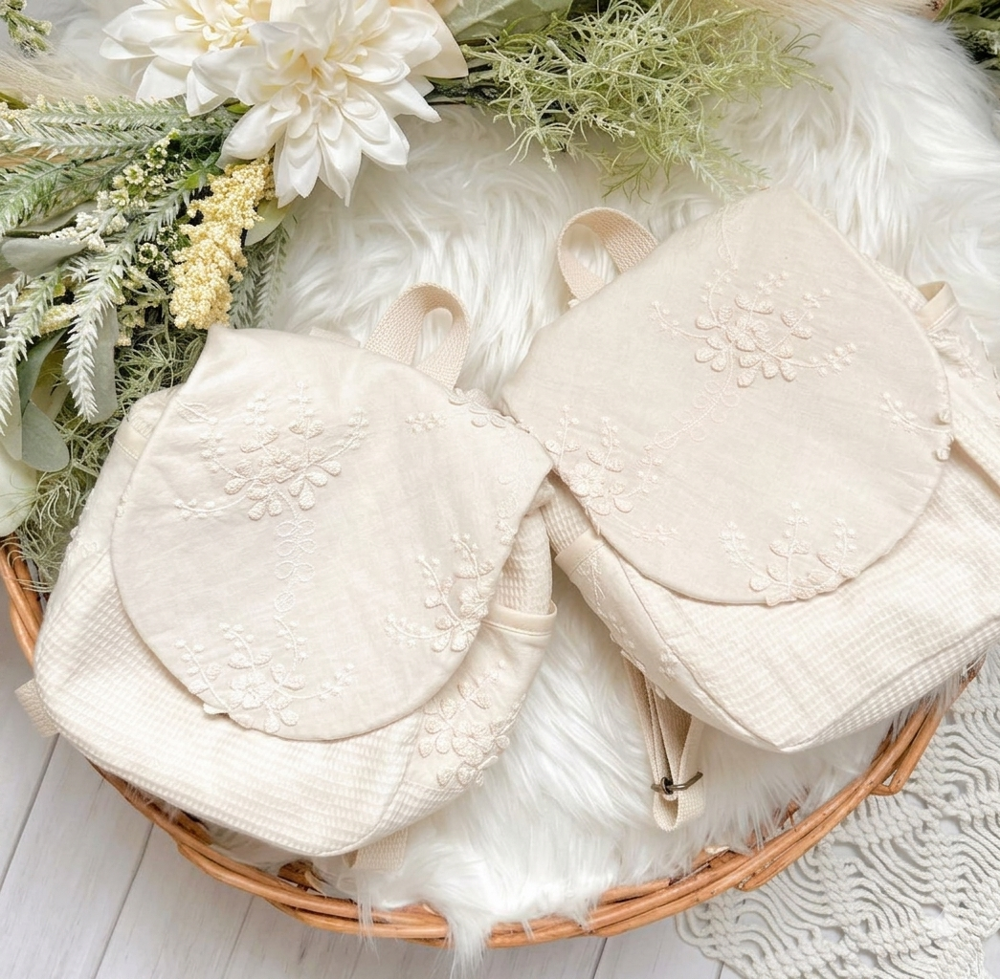
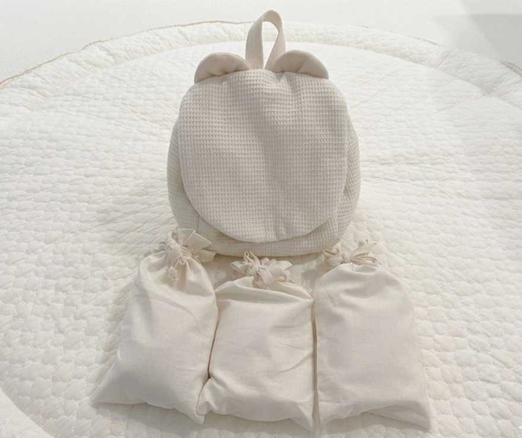
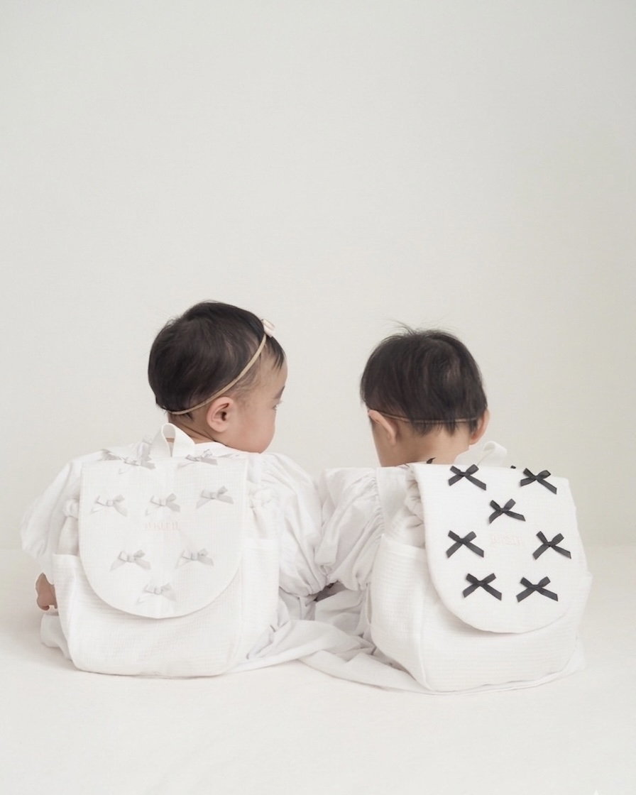

一升餅
一升餅リュックとは？
1歳の誕生日の意味と選び方
2026.06.04
赤ちゃんの1歳の誕生日に「一升餅を背負わせる」という伝統行事をご存知ですか？この記事では意味や由来、リュックの選び方のポイントをご紹介します。

一升餅とは？行事の意味と由来
一升餅（いっしょうもち）は、子どもの1歳の誕生日をお祝いする日本の伝統行事です。「一升」と「一生」の音が同じことから、「一生食べ物に困らないように」という願いを込めて行われます。現代ではベビーリュックに入れて背負わせるスタイルが主流です。
一升餅リュックの選び方
一升餅リュックを選ぶときは、以下のポイントを確認しましょう。

素材
赤ちゃんの肌に触れるものなので、やわらかくて安全な素材を選びましょう。綿やキルティング素材が人気です。lil iro babyのリュックはオーガニックコットンを使用しているので、敏感な赤ちゃんの肌にも安心です。
名入れ刺繍
お名前を入れてもらえると、世界にひとつだけの記念品になります。ハンドメイド作家に注文すると、希望のデザインで作ってもらえます。
使いやすさ
行事の後も普段使いのリュックとして使えるデザインを選ぶと、長く愛用できます。

実は「一升米」もおすすめ
一升餅はお餅が約1.8kgと大きく、食べきるのが難しいというお声もよく聞きます。そこで最近おすすめしているのが「一升米」。お米を小分けにした袋に入れてリュックに背負わせるスタイルです。
お餅と同じ意味合いを持ちながら、食べきりやすく、お米なので日々の食事にも使えるので実用的です。
lil iro babyでも、小分け袋に名入れ刺繍を施すオプションを現在準備中です。行事の後はお菓子入れや小物入れとして長く活躍してくれるアイテムになる予定なので、楽しみにお待ちくださいね。

ハンドメイドの一升餅リュックという選択
市販品にはないオリジナリティを求めるなら、ハンドメイド作家への注文がおすすめです。お子さまのお名前や好きなモチーフを刺繍してもらったり、生地や色を選んだりできます。
lil iro babyでは、ひとつひとつていねいに手作りした一升餅リュックをご用意しています。名入れ刺繍で、大切なお子さまの1歳のお誕生日を特別な形で残しませんか。
lil iro baby の一升餅リュックはこちらからご覧いただけます
リュックを見る
← コラム一覧に戻る